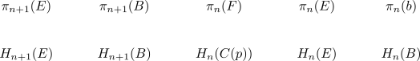

hurewicz homomorphism and long exact sequences of a fibration sequence
Proposition
Let $F \rightarrow E \rightarrow B$ be a fibration sequence. Then there exists a diagram

Let $F \rightarrow E \rightarrow B$ be a fibration sequence. Then there exists a diagram
